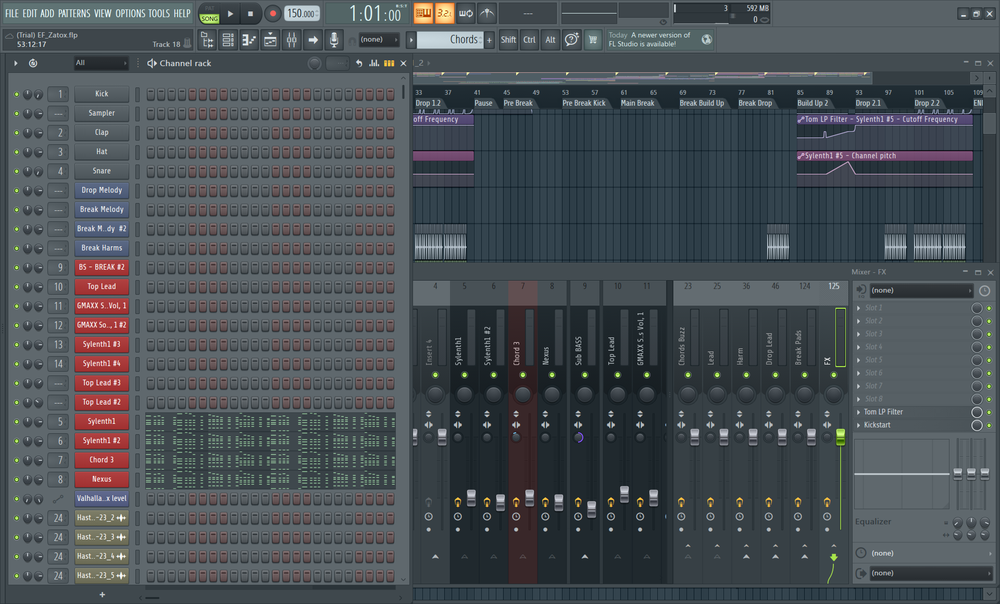
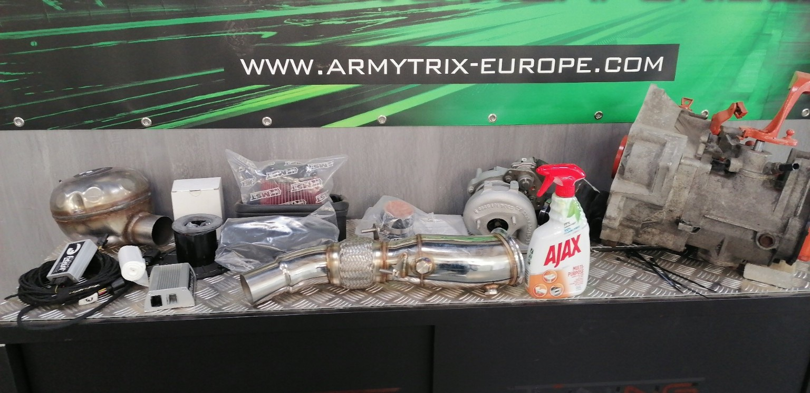

01 // GAMING
Gaming & Game Design
Gaming is voor mij ontspanning, maar ook een interesse in de systemen achter interactieve ervaringen.
RPG's, racinggames en actiongames laten mij nadenken over gameplay, balancing, prestaties en progressie.
03 // BEYOND THE CODE
De persoon achter het technische profiel.
Mijn interesses draaien rond technologie, creativiteit, systemen en experimenteren. Van gaming en elektronische muziek tot automotive en softwareontwikkeling: ik ontdek graag hoe dingen werken en hoe ik ze kan verbeteren.
01 // VISUELE VERKENNING
Zes beelden uit mijn bestaande projecten en persoonlijke technische interesses.

Elektronische muziek en sound design.

Techniek, tuning en praktisch experimenteren.

Van interesse in games naar zelf systemen bouwen.

Experimenteren met combat en interactieve systemen.

Onderzoeken hoe systemen samenwerken.

Eigen ideeën omzetten naar werkende prototypes.
02 // INTERESSES
01 // GAMING
Gaming is voor mij ontspanning, maar ook een interesse in de systemen achter interactieve ervaringen.
RPG's, racinggames en actiongames laten mij nadenken over gameplay, balancing, prestaties en progressie.
02 // MUSIC
Onder de creatieve identiteit Echo//Forge experimenteer ik met elektronische muziek, productie en sound design.
Muziekproductie combineert technische precisie met creativiteit: experimenteren, luisteren, aanpassen en opnieuw proberen.
03 // AUTOMOTIVE
Mijn interesse in auto's en techniek komt voort uit jaren praktische ervaring en technisch werk.
Tuning, customwerk en onderzoeken hoe mechanische systemen reageren op aanpassingen blijven mij boeien.
04 // BUILDING
Ik bouw graag dingen om te begrijpen hoe ze werken. Dat kan gaan van software en gameprototypes tot websites, hardware en pc's.
Daarbij staat niet alleen het eindresultaat centraal, maar vooral het leerproces.
Bekijk mijn projectenNieuwsgierigheid en experimenteren vormen de rode draad door mijn interesses.